[Latin designation]
The Bestiary
Draft · placeholder pieces and prices · to be polished by the founder
Every piece on Strigoi, from every shop, laid on one plane. None is placed first: the order changes once a day.
Every piece · 15 pieces
-
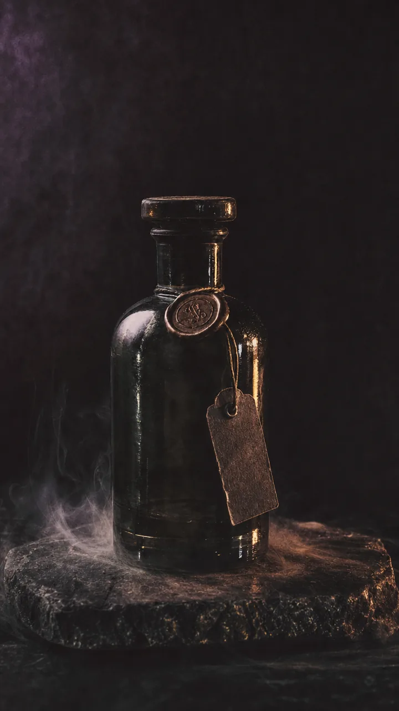
Grave Soil Studio Moroi · Perfume -
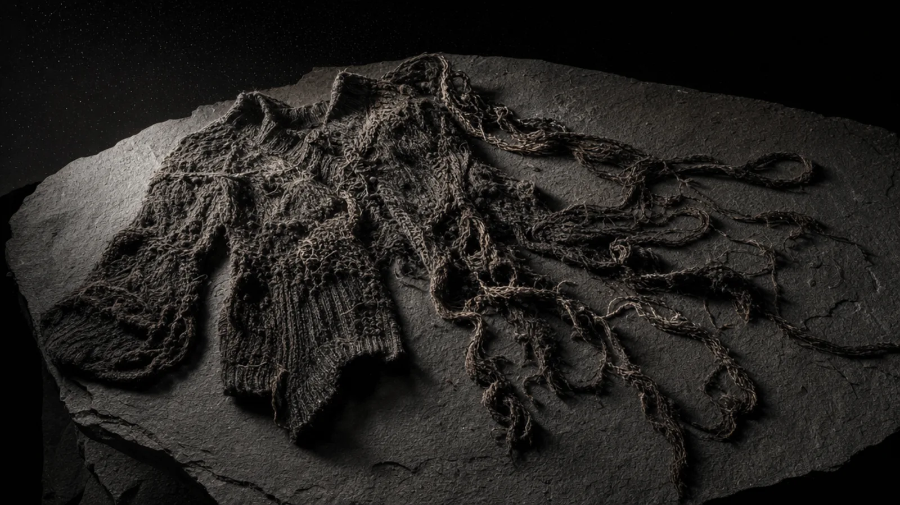
Molt Sweater Studio Moroi · Knitwear -
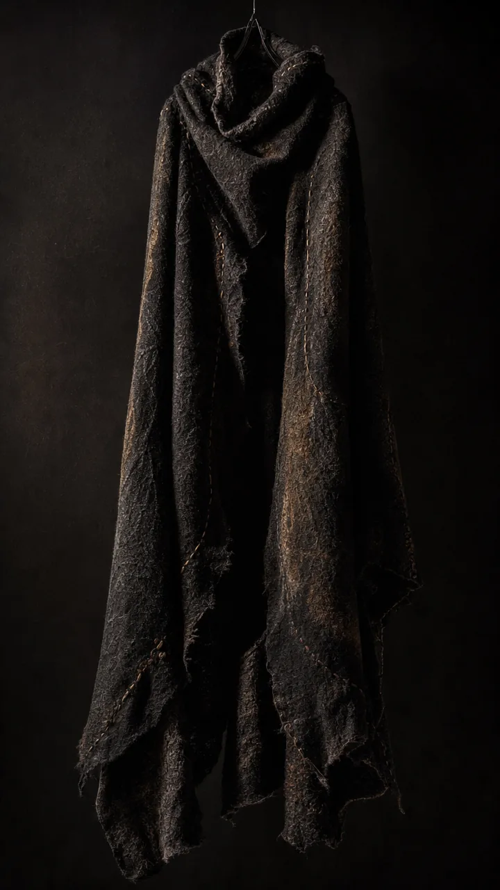
Nyx Mantle Vârcolac Atelier · Garment -
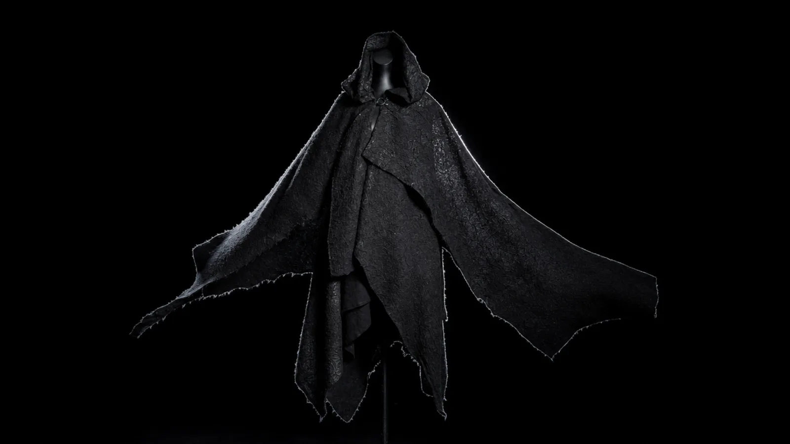
Nyx Mantle Vârcolac Atelier · Garment -
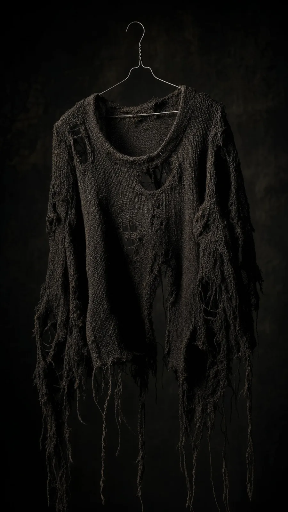
Unravelled Sweater Studio Moroi · Knitwear -
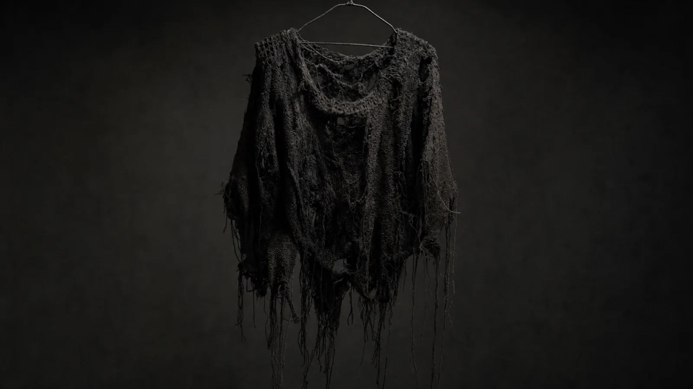
Unravelled Sweater Studio Moroi · Knitwear -
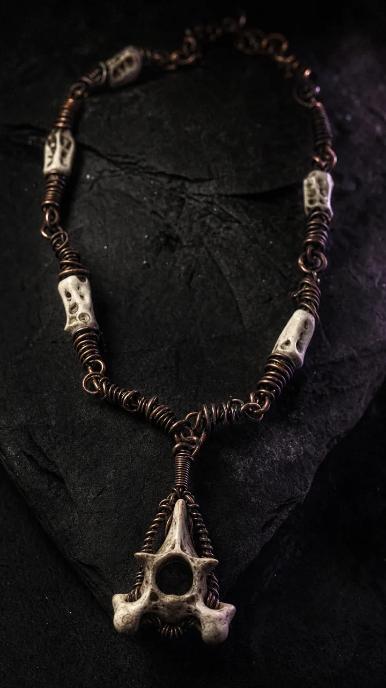
Vertebra Collar Ileana C. · Jewelry -
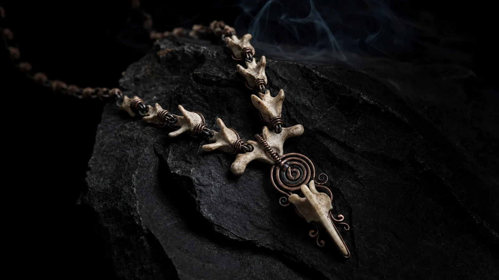
Vertebra Collar Ileana C. · Jewelry -
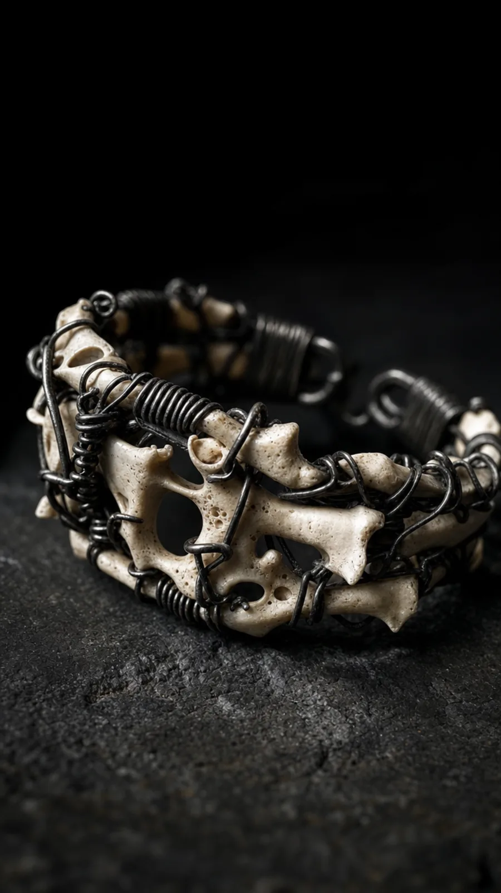
Vertebra Cuff Ileana C. · Jewelry -
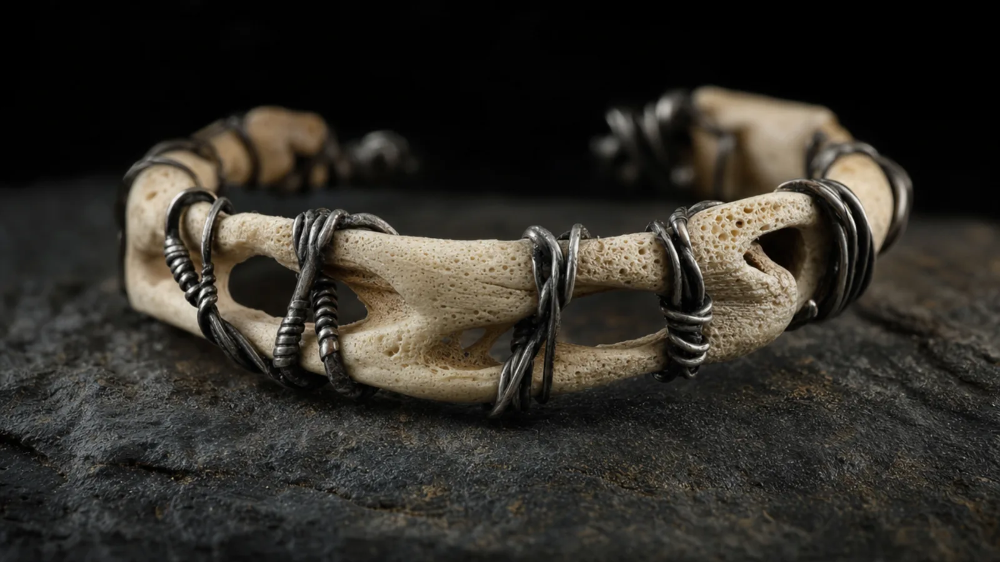
Vertebra Cuff Ileana C. · Jewelry -
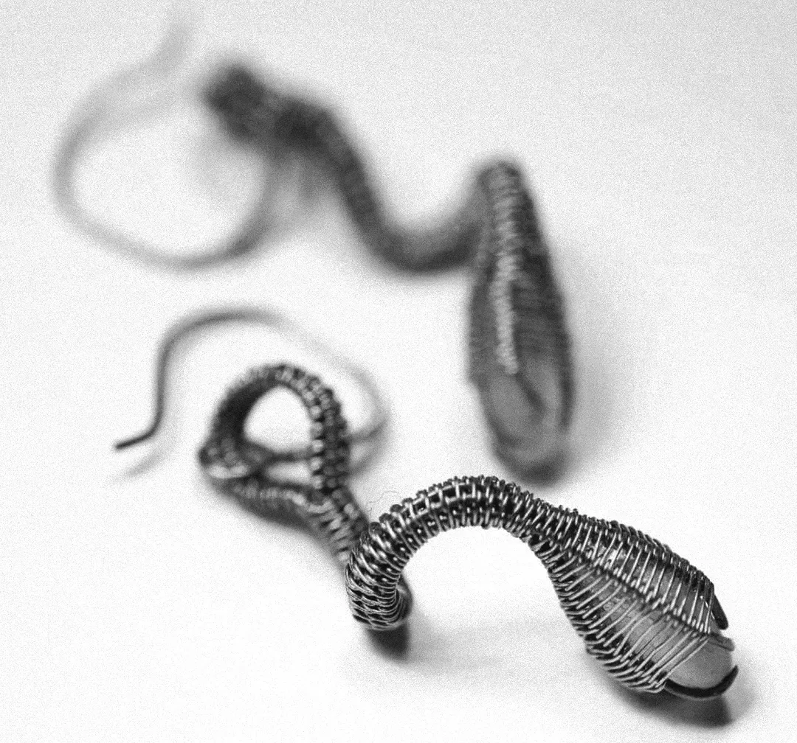
Coil Earrings Demo shop · Jewelry -
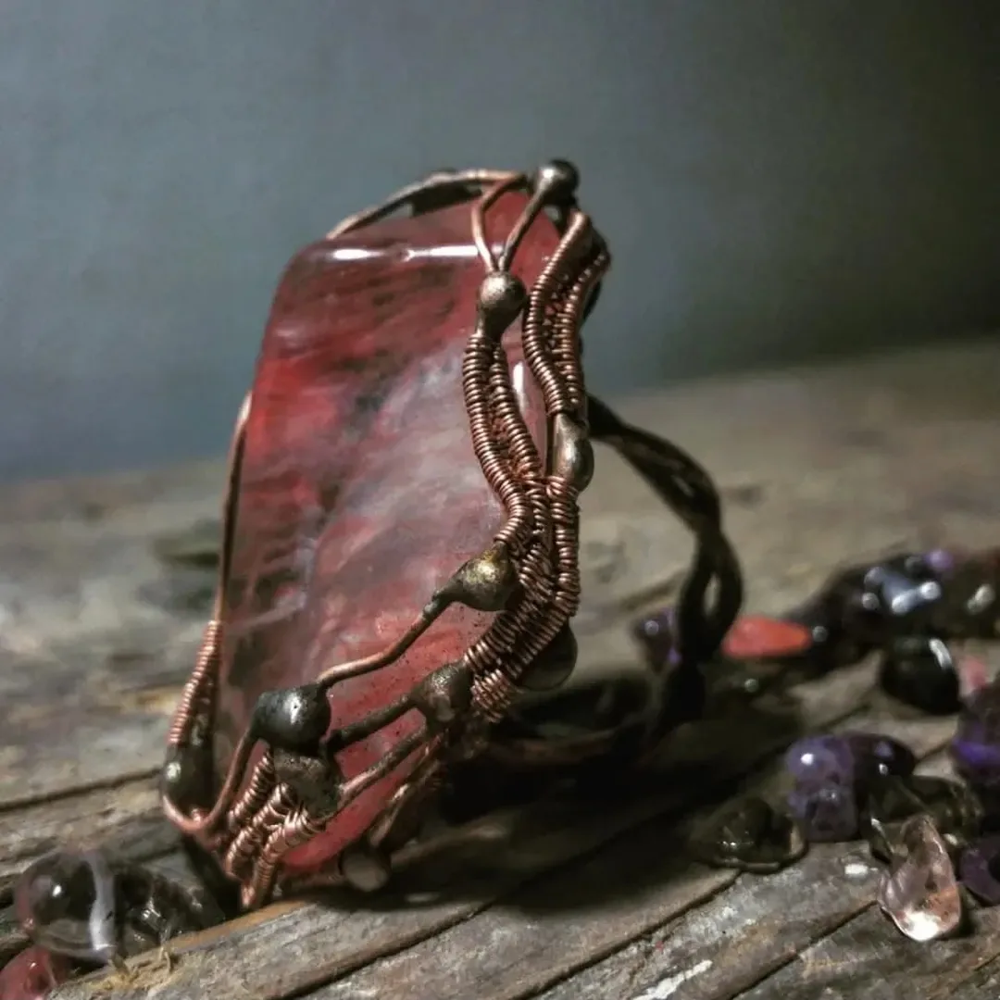
Red Quartz Cuff Demo shop · Jewelry -
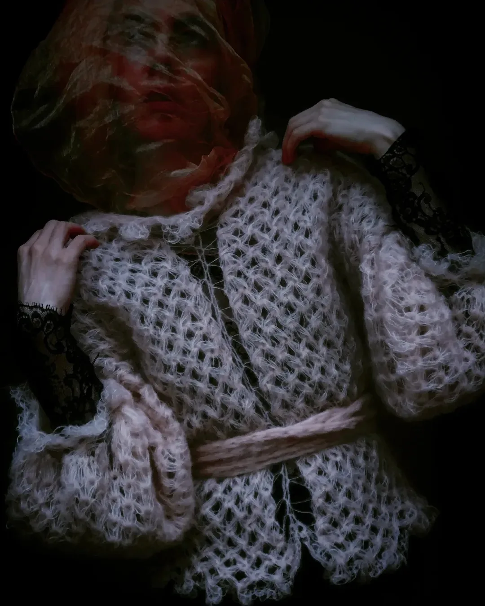
Mohair Cardigan Demo shop · Knitwear -
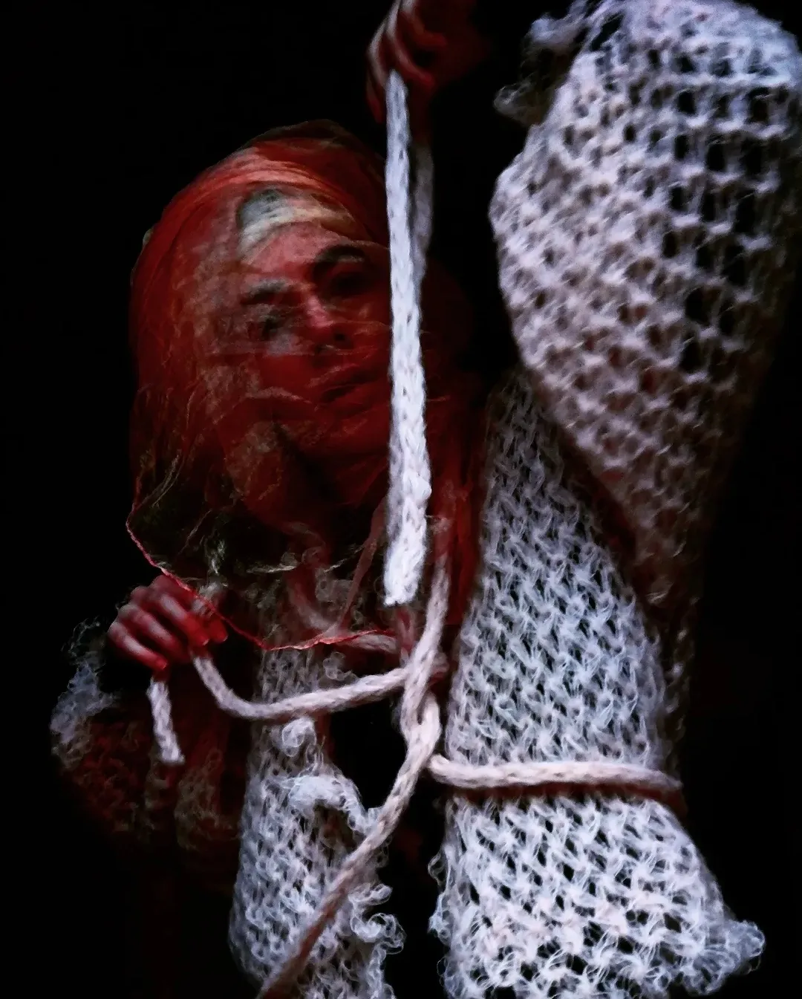
Roped Mohair Knit Demo shop · Knitwear -
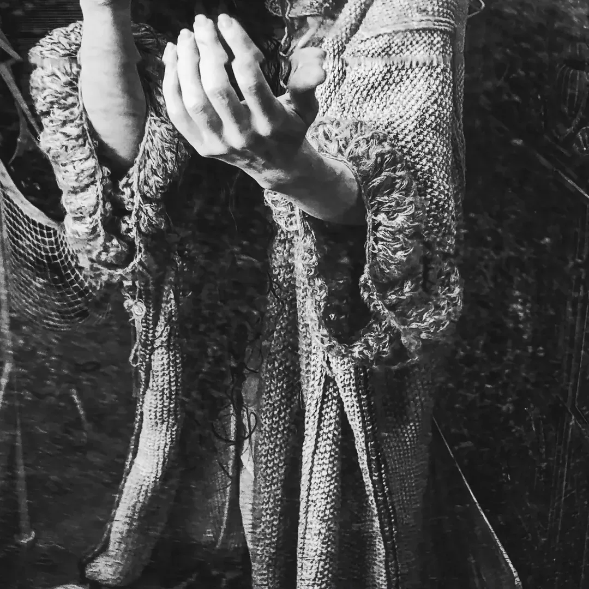
Lace Sleeves Demo shop · Knitwear
Three pieces so far, from the sample shop. The plane fills as makers are let in.